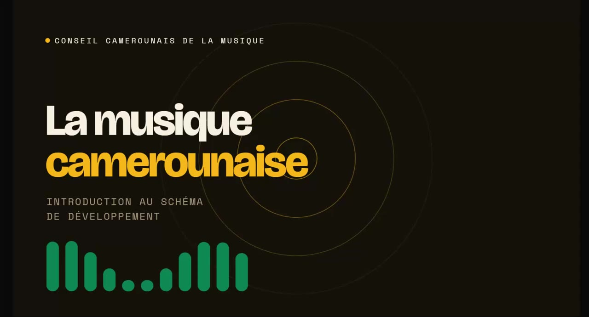
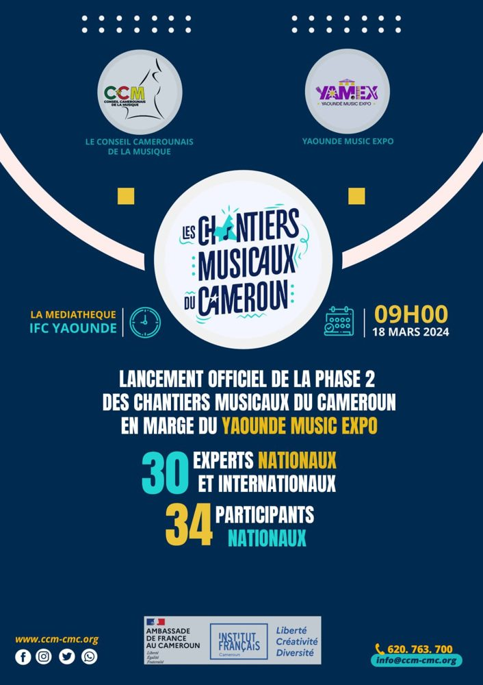

2025 · Video
The Cameroon Music Worksites in four minutes
The CCM releases a summary video of the Music Worksites (in French): from the legacy of makossa and “Soul Makossa” to the industry's digital transformation, from the mapping figures to the development plan's proposals.
Watch the video

June 2024 · Publications
The development plan presented to public authorities in Yaoundé
The last stage of the Music Worksites presented the Introduction to the Development Plan of the Cameroonian Music Industry to institutions and professional organisations, alongside Zone by DOMAF. The document maps 3,199 professionals, analyses listening habits and proposes a comprehensive strategy: decentralisation, music in schools, law enforcement, digital monetisation and artist mobility.
Download the document

18 March 2024 · Training
Phase 2 launched alongside the Yaoundé Music Expo
The second stage of the Music Worksites was officially launched on 18 March 2024 at the Institut français in Yaoundé. From 18 to 22 March, Cameroonian and international experts from Nigeria, Ghana, Côte d'Ivoire, Senegal, France and Martinique ran more than 16 workshops on promotion, entrepreneurship, distribution and rights.
Meet the speakers

8 February 2024 · Programmes
Launch of the Cameroon Music Worksites in Douala
From 8 to 10 February 2024, 64 professionals from all ten regions met in Douala to assess the state of Cameroonian music. Producers, promoters and broadcasters worked by cultural area to identify what is holding the sector back.
The full programme